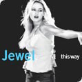

Related Content: Discography, Biography, and Downloads
View all lyrics or see below for listing by major albums
0304
(Lyrics © 2003 Wiggly Tooth, and other companies. All Rights Reserved.)
Intuition (single)
(Lyrics © 2003 Wiggly Tooth, and other companies. All Rights Reserved.)
This information is incomplete.
This Way
(Lyrics © 2001 Wiggly Tooth, and other companies. All Rights Reserved.)
- Standing Still
- Jesus Loves You
- Everybody Needs Someone Sometime
- Break Me
- Do You Want To Play
- Till We Run Out Of Road
- Serve The Ego
- This Way
- Cleveland
- I Won't Walk Away
- Love Me Just Leave Me Alone
- The New Wild West
Bonus North American Tracks: (note lyrics probably differ from album version)
13. Grey Matter
14. Sometimes It Be That Way
B-side tracks from "Standing Still" import single
Joy: A Holiday Collection Lyrics
(Lyrics � 1999 Wiggly Tooth, and other companies. All Rights Reserved.)
Download the Lyrics: Zip File>
View in HTML format:

- Joy To The World
- O Holy Night
- Silent Night
- Winter Wonderland
- O Little Town Of Bethlehem
- Ave Maria
- Hark! The Herald Angels Sing
- Rudolph The Red Nosed Reindeer
- Face Of Love
- Medley
- Go Tell It On The Mountain
- Life Uncommon
- From A Distance
- I Wonder As I Wander
- Gloria
- Hands (Christmas Version)

Pieces of You Lyrics
(All songs � 1994-1996 Wiggly Tooth. All rights reserved.)
Download the lyrics: Zip File
View in HTML format:
- Who will save your soul
- Pieces of You

- Little Sister
- Foolish Games
- Near You Always
- Painters
- Morning Song
- Adrian
- I'M Sensitive
- You Were Meant For Me
- Don't
- Daddy
- Angel Standing By
- Amen
Poems Included On The Album Cover
The Poems section has been moved to it's own section of the site. You may wish to check that page for a representation of Jewel's Poetry.
 POY
Lyrics Information
POY
Lyrics Information
Explains the origin of each song on the album.
All songs written by Jewel Kilcher © 1994-2000 Wiggly Tooth, ASCAP except "Adrian" and "You Were Meant For Me" in which Steve Poltz (of the Rugburns) Co-wrote.
{kind=link}